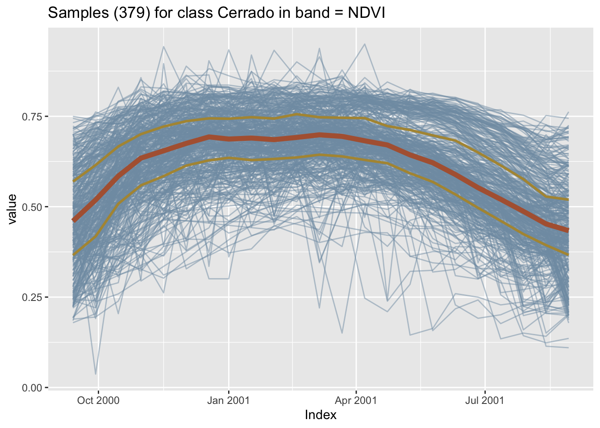
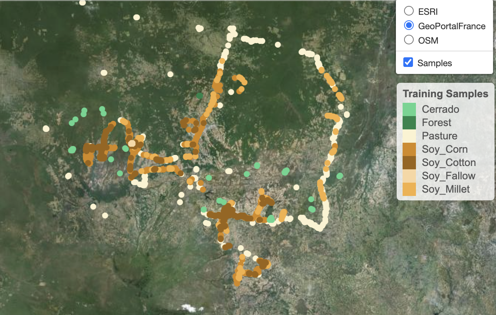
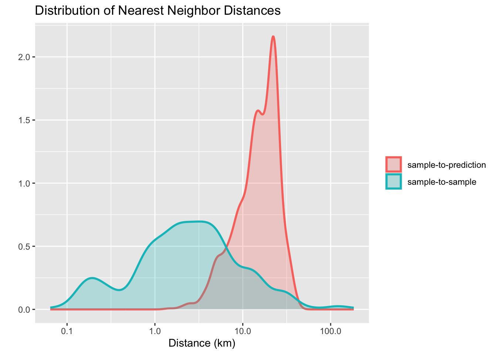
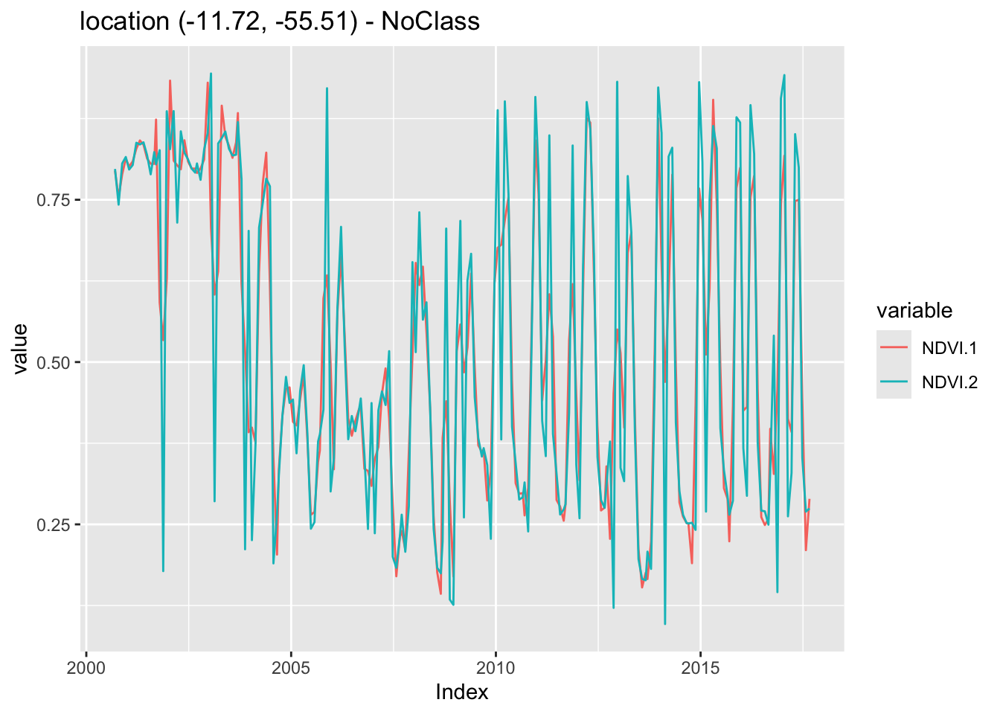

12 Basic operations on image time series
Configurations to run this chapter
12.1 Data structure for image time series

In sits, time series are stored in a tibble data structure. The following code shows the first three lines of a time series tibble containing 1,882 labeled samples of land classes in Mato Grosso state of Brazil. The samples have time series extracted from the MODIS MOD13Q1 product from 2000 to 2016, provided every 16 days at 250 m resolution in the Sinusoidal projection. Based on ground surveys and high-resolution imagery, it includes samples of seven classes: Forest, Cerrado, Pasture, Soy_Fallow, Soy_Cotton, Soy_Corn, and Soy_Millet.
# Samples
data("samples_matogrosso_mod13q1")
samples_matogrosso_mod13q1[1:4,]# A tibble: 4 × 7
longitude latitude start_date end_date label cube time_series
<dbl> <dbl> <date> <date> <chr> <chr> <list>
1 -57.8 -9.76 2006-09-14 2007-08-29 Pasture bdc_cube <tibble [23 × 5]>
2 -59.4 -9.31 2014-09-14 2015-08-29 Pasture bdc_cube <tibble [23 × 5]>
3 -59.4 -9.31 2013-09-14 2014-08-29 Pasture bdc_cube <tibble [23 × 5]>
4 -57.8 -9.76 2006-09-14 2007-08-29 Pasture bdc_cube <tibble [23 × 5]>The time series tibble contains data and metadata. The first six columns contain spatial and temporal information, the label assigned to the sample, and the data cube from where the data has been extracted. The first sample has been labeled Pasture at location (-58.5631, -13.8844), being valid for the period (2006-09-14, 2007-08-29). Informing the dates where the label is valid is crucial for correct classification. In this case, the researchers labeling the samples used the agricultural calendar in Brazil. The relevant dates for other applications and other countries will likely differ from those used in the example. The time_series column contains the time series data for each spatiotemporal location. This data is also organized as a tibble, with a column with the dates and the other columns with the values for each spectral band.
12.2 Utilities for handling time series
The package provides functions for data manipulation and displaying information for time series tibbles. For example, summary() shows the labels of the sample set and their frequencies.
summary(samples_matogrosso_mod13q1)# A tibble: 7 × 3
label count prop
<chr> <int> <dbl>
1 Cerrado 379 0.206
2 Forest 131 0.0713
3 Pasture 344 0.187
4 Soy_Corn 364 0.198
5 Soy_Cotton 352 0.192
6 Soy_Fallow 87 0.0474
7 Soy_Millet 180 0.0980In many cases, it is helpful to relabel the dataset. For example, there may be situations where using a smaller set of labels is desirable because samples in one label on the original set may not be distinguishable from samples with other labels. We then could use sits_labels()<- to assign new labels. The example below shows how to do relabeling on a time series set shown above; all samples associated with crops are grouped in a single Cropland label.
# Copy the sample set for Mato Grosso
samples_new_labels <- samples_matogrosso_mod13q1
# Show the current labels
sits_labels(samples_new_labels)[1] "Cerrado" "Forest" "Pasture" "Soy_Corn" "Soy_Cotton"
[6] "Soy_Fallow" "Soy_Millet"# Update the labels
sits_labels(samples_new_labels) <- c("Cerrado", "Forest",
"Pasture", "Cropland",
"Cropland", "Cropland",
"Cropland")
summary(samples_new_labels)# A tibble: 4 × 3
label count prop
<chr> <int> <dbl>
1 Cerrado 379 0.206
2 Cropland 983 0.535
3 Forest 131 0.0713
4 Pasture 344 0.187 Since metadata and the embedded time series use the tibble data format, the functions from dplyr, tidyr, and purrr packages of the tidyverse [1] can be used to process the data. For example, the following code uses sits_select() to get a subset of the sample dataset with two bands (NDVI and EVI) and then uses the dplyr::filter() to select the samples labeled as Cerrado.
# Select NDVI band
samples_ndvi <- sits_select(samples_matogrosso_mod13q1,
bands = "NDVI")
# Select only samples with Cerrado label
samples_cerrado <- dplyr::filter(samples_ndvi,
label == "Cerrado")12.3 Time series visualisation
The default time series plot in sits combines all samples together in a single temporal interval, even if they belong to different years. This plot shows the spread of values for the time series of each band. The strong red line in the plot indicates the median of the values, while the two orange lines are the first and third interquartile ranges. See ?sits::plot for more details on data visualization in sits.
# Plot cerrado samples together
plot(samples_cerrado)
To see the spatial distribution of the samples, use sits_view() to create an interactive plot. The spatial visulisation is useful to show where the data has been collected.
sits_view(samples_matogrosso_mod13q1)
12.4 Patterns of training samples
When dealing with large time series, its is useful to obtain a single plot that captures the essential temporal variability of each class. Following the work on the dtwSat R package [2], we use a generalized additive model (GAM) to obtain a single time series based on statistical approximation. In a GAM, the predictor depends linearly on a smooth function of the predictor variables.
\[ y = \beta_{i} + f(x) + \epsilon, \epsilon \sim N(0, \sigma^2). \]
The function sits_patterns() uses a GAM to predict an idealized approximation to the time series associated with each class for all bands. The resulting patterns can be viewed using plot().
# Estimate the patterns for each class and plot them
samples_matogrosso_mod13q1 |>
sits_patterns() |>
plot()
The resulting patterns provide some insights over the time series behaviour of each class. The response of the Forest class is quite distinctive. They also show that it should be possible to separate between the single and double cropping classes. There are similarities between the double-cropping classes (Soy_Corn and Soy_Millet) and between the Cerrado and Pasture classes. The subtle differences between class signatures provide hints at possible ways by which machine learning algorithms might distinguish between classes. One example is the difference between the middle-infrared response during the dry season (May to September) to differentiate between Cerrado and Pasture.
12.5 Geographical variability of training data
When working with machine learning classification of Earth observation data, it is important to evaluate if the training samples are well distributed in the study area. Training data often comes from ground surveys made at chosen locations. In large areas, ideally representative samples need to capture spatial variability. In practice, however, ground surveys or other means of data collection are limited to selected areas. In many cases, the geographical distribution of the training data does not cover the study area equally. Such mismatch can be a problem for achieving a good quality classification. As stated by Meyer and Pebesma [3]: “large gaps in geographic space do not always imply large gaps in feature space”.
Meyer and Pebesma propose using a spatial distance distribution plot, which displays two distributions of nearest-neighbor distances: sample-to-sample and prediction-location-to-sample [3]. The difference between the two distributions reflects the degree of spatial clustering in the reference data. Ideally, the two distributions should be similar. Cases where the sample-to-sample distance distribution does not match prediction-location-to-sample distribution indicate possible problems in training data collection.
sits implements spatial distance distribution plots with the sits_geo_dist() function. This function gets a training data in the samples parameter, and the study area in the roi parameter expressed as an sf object. Additional parameters are n (maximum number of samples for each distribution) and crs (coordinate reference system for the samples). By default, n is 1000, and crs is “EPSG:4326”. The example below shows how to use sits_geo_dist().
# Read a shapefile for the state of Mato Grosso, Brazil
mt_shp <- system.file("extdata/shapefiles/mato_grosso/mt.shp",
package = "sits")
# Convert to an sf object
mt_sf <- sf::read_sf(mt_shp)
# Calculate sample-to-sample and sample-to-prediction distances
distances <- sits_geo_dist(
samples = samples_modis_ndvi,
roi = mt_sf)
# Plot sample-to-sample and sample-to-prediction distances
plot(distances)
The plot shows a mismatch between the sample-to-sample and the sample-to-prediction distributions. Most samples are closer to each other than they are close to the location where values need to be predicted. In this case, there are many areas where few or no samples have been collected and where the prediction uncertainty will be higher. In this and similar cases, improving the distribution of training samples is always welcome. If that is not possible, areas with insufficient samples could have lower accuracy. This information must be reported to potential users of classification results.
12.6 Time series from data cubes
To get a set of time series in sits, first create a regular data cube and then request one or more time series from the cube using sits_get_data(). This function uses two mandatory parameters: cube and samples. The cube indicates the data cube from which the time series will be extracted. The samples parameter accepts the following data types:
- A data.frame with information on
latitudeandlongitude(mandatory),start_date,end_date, andlabelfor each sample point. - A csv file with columns
latitude,longitude,start_date,end_date, andlabel. - A shapefile containing either
POINTorPOLYGONgeometries. See details below. - An
sfobject (from thesfpackage) withPOINTorPOLYGONgeometry information. See details below.
In the example below, given a data cube, the user provides the latitude and longitude of the desired location. Since the bands, start date, and end date of the time series are missing, sits obtains them from the data cube. The result is a tibble with one time series that can be visualized using plot().
# Obtain a raster cube based on local files
data_dir <- system.file("extdata/sinop", package = "sitsdata")
raster_cube <- sits_cube(
source = "BDC",
collection = "MOD13Q1-6.1",
data_dir = data_dir,
parse_info = c("satellite", "sensor", "tile", "band", "date"))
# Obtain a time series from the raster cube from a point
sample_latlong <- tibble::tibble(
longitude = -55.57320,
latitude = -11.50566)
series <- sits_get_data(cube = raster_cube,
samples = sample_latlong)
series# A tibble: 1 × 7
longitude latitude start_date end_date label cube time_series
<dbl> <dbl> <date> <date> <chr> <chr> <list>
1 -55.6 -11.5 2013-09-14 2014-08-29 NoClass MOD13Q1-6.1 <tibble [23 × 3]>A useful case is when a set of labeled samples can be used as a training dataset. In this case, trusted observations are usually labeled and commonly stored in plain text files in comma-separated values (csv) or using shapefiles (shp).
# Retrieve a list of samples described by a csv file
samples_csv_file <- system.file("extdata/samples/samples_sinop_crop.csv",
package = "sits")
# Read the csv file into an R object
samples_csv <- read.csv(samples_csv_file)
# Print the first three samples
samples_csv[1:3,] id longitude latitude start_date end_date label
1 1 -55.65931 -11.76267 2013-09-14 2014-08-29 Pasture
2 2 -55.64833 -11.76385 2013-09-14 2014-08-29 Pasture
3 3 -55.66738 -11.78032 2013-09-14 2014-08-29 ForestTo retrieve training samples for time series analysis, users must provide the temporal information (start_date and end_date). In the simplest case, all samples share the same dates. That is not a strict requirement. It is possible to specify different dates as long as they have a compatible duration. For example, the dataset samples_matogrosso_mod13q1 provided with the sitsdata package contains samples from different years covering the same duration. These samples are from the MOD13Q1 product, which contains the same number of images per year. Thus, all time series in the dataset samples_matogrosso_mod13q1 have the same number of dates.
Given a suitably built csv sample file, sits_get_data() requires two parameters: (a) cube, the name of the R object that describes the data cube; (b) samples, the name of the CSV file.
# Get the points from a data cube in raster brick format
points <- sits_get_data(cube = raster_cube,
samples = samples_csv_file)
# Show the tibble with the first three points
points[1:3,]# A tibble: 3 × 7
longitude latitude start_date end_date label cube time_series
<dbl> <dbl> <date> <date> <chr> <chr> <list>
1 -55.8 -11.7 2013-09-14 2014-08-29 Cerrado MOD13Q1-6.1 <tibble>
2 -55.8 -11.7 2013-09-14 2014-08-29 Cerrado MOD13Q1-6.1 <tibble>
3 -55.7 -11.7 2013-09-14 2014-08-29 Soy_Corn MOD13Q1-6.1 <tibble> Users can also specify samples by providing shapefiles or sf objects containing POINT or POLYGON geometries. The geographical location is inferred from the geometries associated with the shapefile or sf object. For files containing points, the geographical location is obtained directly. For polygon geometries, the parameter n_sam_pol (defaults to 20) determines the number of samples to be extracted from each polygon. The temporal information can be provided explicitly by the user; if absent, it is inferred from the data cube. If label information is available in the shapefile or sf object, the parameter label_attr is indicates which column contains the label associated with each time series.
In what follows, we provide a shapefile with location of forested areas in the Cerrado biome in Brazil. The shapefile is first used to define the region of interest to retrieve a data cube. Then the point locations are used to retrieve the time series.
# Obtain a set of points inside the state of Mato Grosso, Brazil
shp_file <- system.file("extdata/shapefiles/cerrado/cerrado_forested.shp",
package = "sits")
# Read the shapefile into an "sf" object
sf_shape <- sf::st_read(shp_file)
# Create a data cube based on MOD13Q1 collection from BDC
modis_cube <- sits_cube(
source = "BDC",
collection = "MOD13Q1-6.1",
bands = c("NDVI", "EVI"),
roi = sf_shape,
start_date = "2020-06-01",
end_date = "2021-08-29")
# Read the points from the cube and produce a tibble with time series
samples_cerrado_forested <- sits_get_data(
cube = modis_cube,
samples = shp_file,
start_date = "2020-06-01",
end_date = "2021-08-29",
label = "Woody Savanna",
multicores = 4)
# Display the time series for the locations of Woody Savanna
samples_cerrado_forested# A tibble: 40 × 7
longitude latitude start_date end_date label cube time_series
<dbl> <dbl> <date> <date> <chr> <chr> <list>
1 -51.9 -13.6 2020-06-09 2021-08-29 Woody Savanna MOD13Q1-6… <tibble>
2 -51.5 -13.6 2020-06-09 2021-08-29 Woody Savanna MOD13Q1-6… <tibble>
3 -51.4 -12.6 2020-06-09 2021-08-29 Woody Savanna MOD13Q1-6… <tibble>
4 -51.3 -13.3 2020-06-09 2021-08-29 Woody Savanna MOD13Q1-6… <tibble>
5 -51.2 -13.8 2020-06-09 2021-08-29 Woody Savanna MOD13Q1-6… <tibble>
6 -51.1 -13.0 2020-06-09 2021-08-29 Woody Savanna MOD13Q1-6… <tibble>
7 -50.7 -13.1 2020-06-09 2021-08-29 Woody Savanna MOD13Q1-6… <tibble>
8 -50.2 -14.3 2020-06-09 2021-08-29 Woody Savanna MOD13Q1-6… <tibble>
9 -50.1 -14.2 2020-06-09 2021-08-29 Woody Savanna MOD13Q1-6… <tibble>
10 -47.3 -11.3 2020-06-09 2021-08-29 Woody Savanna MOD13Q1-6… <tibble>
# ℹ 30 more rows12.7 Filtering time series
Satellite image time series is generally contaminated by atmospheric influence, geolocation error, and directional effects [4]. Atmospheric noise, sun angle, interferences on observations or different equipment specifications, and the nature of the climate-land dynamics can be sources of variability [5]. Inter-annual climate variability also changes the phenological cycles of the vegetation, resulting in time series whose periods and intensities do not match on a year-to-year basis. To make the best use of available satellite data archives, methods for satellite image time series analysis need to deal with noisy and non-homogeneous datasets.
The literature on satellite image time series has several applications of filtering to correct or smooth vegetation index data. The package supports the well-known Savitzky–Golay (sits_sgolay()) and Whittaker (sits_whittaker()) filters. In an evaluation of NDVI time series filtering for estimating phenological parameters in India, Atkinson et al. found that the Whittaker filter provides good results [5]. Zhou et al. found that the Savitzky-Golay filter is suitable for reconstructing tropical evergreen broadleaf forests [6].
12.7.1 Savitzky–Golay filter
The Savitzky-Golay filter fits a successive array of \(2n+1\) adjacent data points with a \(d\)-degree polynomial through linear least squares. The main parameters for the filter are the polynomial degree (\(d\)) and the length of the window data points (\(n\)). It generally produces smoother results for a larger value of \(n\) and/or a smaller value of \(d\) [7]. The optimal value for these two parameters can vary from case to case. In sits, the parameter order sets the order of the polynomial (default = 3), the parameter length sets the size of the temporal window (default = 5), and the parameter scaling sets the temporal expansion (default = 1). The following example shows the effect of Savitsky-Golay filter on a point extracted from the MOD13Q1 product, ranging from 2000-02-18 to 2018-01-01.
# Take NDVI band of the first sample dataset
point_ndvi <- sits_select(point_mt_6bands, bands = "NDVI")
# Apply Savitzky Golay filter
point_sg <- sits_sgolay(point_ndvi, length = 5)
# Merge the point and plot the series
sits_merge(point_sg, point_ndvi) |> plot()[[1]]
12.7.2 Whittaker filter
The Whittaker smoother attempts to fit a curve representing the raw data, but is penalized if subsequent points vary too much [8]. The Whittaker filter balances the residual to the original data and the smoothness of the fitted curve. The filter has one parameter: \(\lambda{}\) that works as a smoothing weight parameter. The following example shows the effect of the Whittaker filter on a point extracted from the MOD13Q1 product, ranging from 2000-02-18 to 2018-01-01. The lambda parameter controls the smoothing of the filter. By default, it is set to 0.5, a small value. The example shows the effect of a larger smoothing parameter.
# Take NDVI band of the first sample dataset
point_ndvi <- sits_select(point_mt_6bands, bands = "NDVI")
# Apply Whitakker filter
point_whit <- sits_whittaker(point_ndvi, lambda = 0.5)
# Merge the point and plot the series
sits_merge(point_whit, point_ndvi) |> plot()[[1]]
Similar to what is observed in the Savitsky-Golay filter, high values of the smoothing parameter lambda produce an over-smoothed time series that reduces the capacity of the time series to represent natural variations in crop growth. For this reason, low smoothing values are recommended when using sits_whittaker().
12.8 Summary
In this chapter, we presented the data structure used by sits to store pixel-based image time series. The text also shows how to retrieve time series from data cubes, as well as utilities available for visualisation, filtering and extracting patterns and geographical distribution. In the next chapters, we discuss how to improve the quality of training samples.